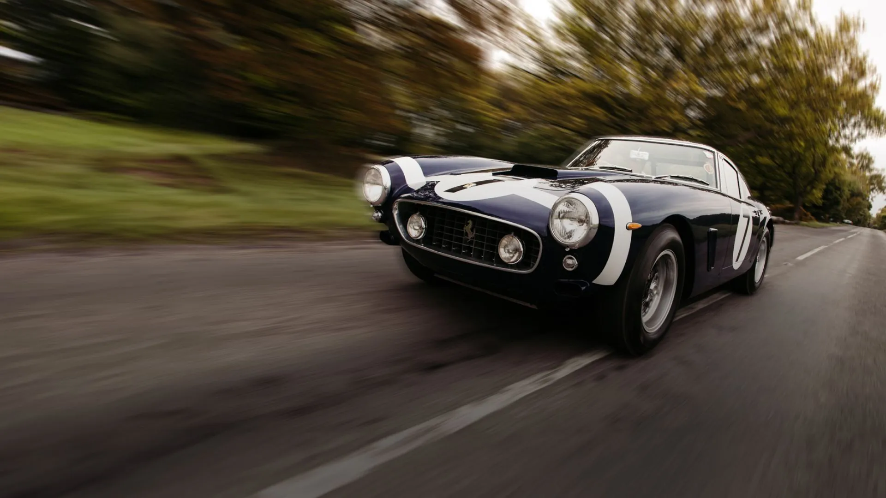
History, forever
Since 1947, the Maranello-based manufacturer has made automotive history, with cars that have sped beyond the limits of the possible.
The Ferrari Classiche department was created to preserve these models and keep the Legend alive.
1Certification of Authenticity
Preserve the value of your Ferrari Classica
Certification of Authenticity proves that your model conforms to the original design, protecting the investment and historical heritage.
One certification, many benefits
The Certificate of Authenticity – available for road cars over 20 years old, Special Series, Sport and Ferrari F1 models – traces the history of the vehicle, verifying its conformity to the original design and the origin of each component. As well as preserving the car’s historical status and potentially increasing its value in the event of its sale, it allows owners to benefit from long-term spare parts and take part in the most prestigious official events.
-
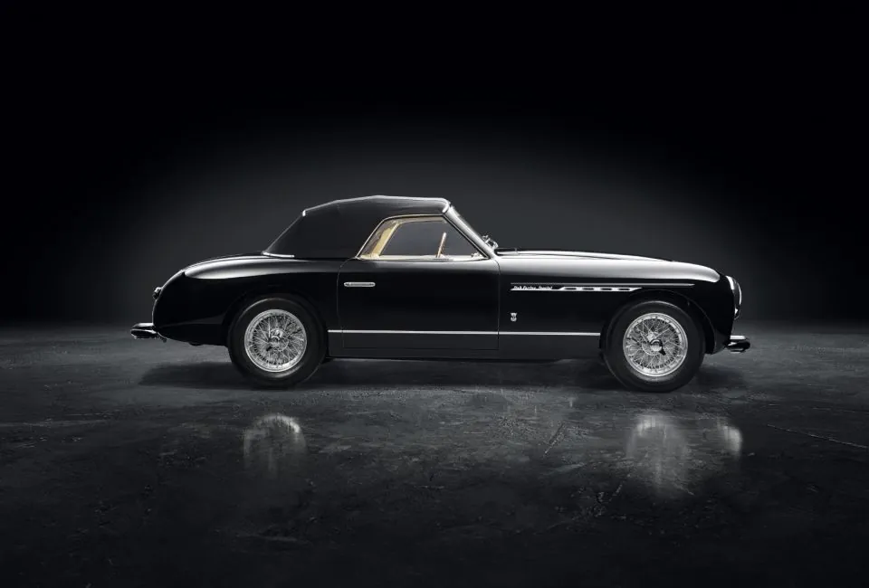
Protect market value
The Ferrari Classiche Certification proves the authenticity and origin of each part, optimizing the car’s valuation.
-
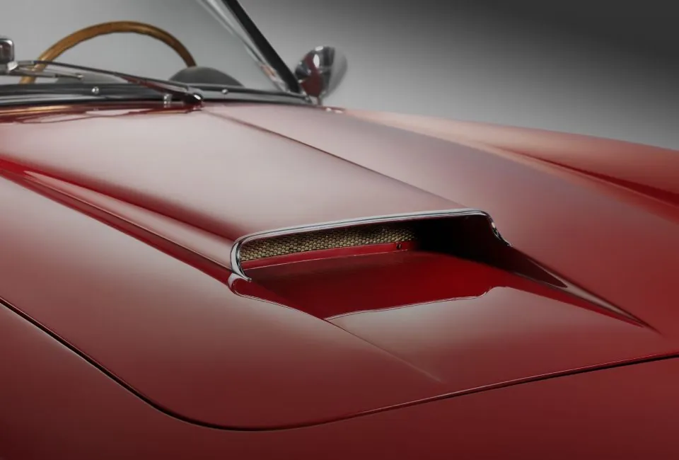
Preserve historical value
Your car’s prestige remains intact: by certifying a Ferrari Classica, you conserve the integrity of the original design.
2Certification steps
Pass the test of time
Certify your Ferrari and preserve its value as the years go by.
Ferrari Classiche Certification is a structured process to guarantee the authenticity of historic cars. The process can be initiated at an authorized dealer or in Maranello and has four distinct steps, to ensure a detailed and thorough assessment.
-
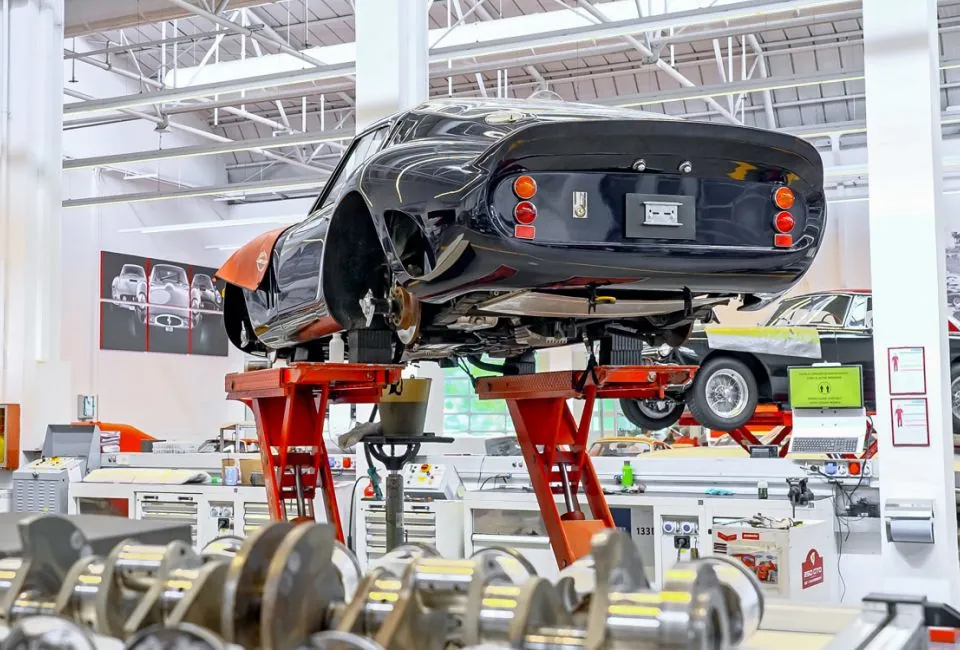
Step 1: Inspection
Your Ferrari Classica can be inspected either by Ferrari Classiche itself or by an authorized dealer. Using photographs, measurements and technical data, all the necessary information is gathered in order to perform the analysis. Following an overall check, the car is returned to the owner ahead of the next step.
-
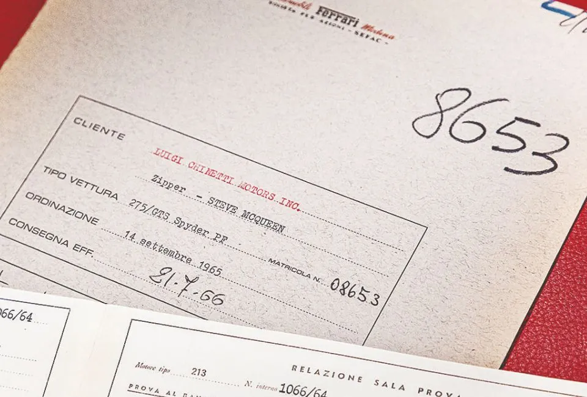
Step 2: Technical analysis
The analysis begins by verifying that the chassis is original – an essential requirement for certification. The bodywork and interior are examined, comparing them against original specifications. The analysis continues with an in-depth check of all the vehicle’s mechanical and electrical systems.
-
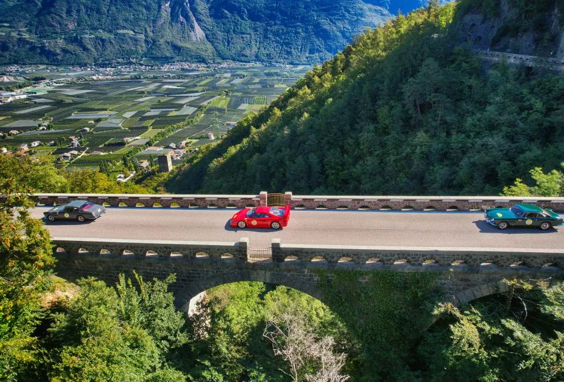
Step 3: Result of certification
The Certification Report, which summarizes the results of the inspection and analysis steps, is submitted to the Certification Committee. This third-party body can then either accept or reject the report. If there are any issues that cannot be waived, the process is suspended until the compromised parts are replaced.
-
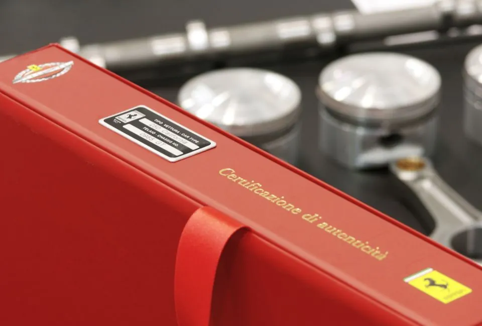
Step 4: The certificate
Once a vehicle is approved, a document is produced that incorporates both photographic and technical evidence. This accompanies the Certificate of Authenticity, signed by Piero Ferrari, which is sent to the owner and attests to the authenticity of the Ferrari Classica in question.
3Officine Classiche
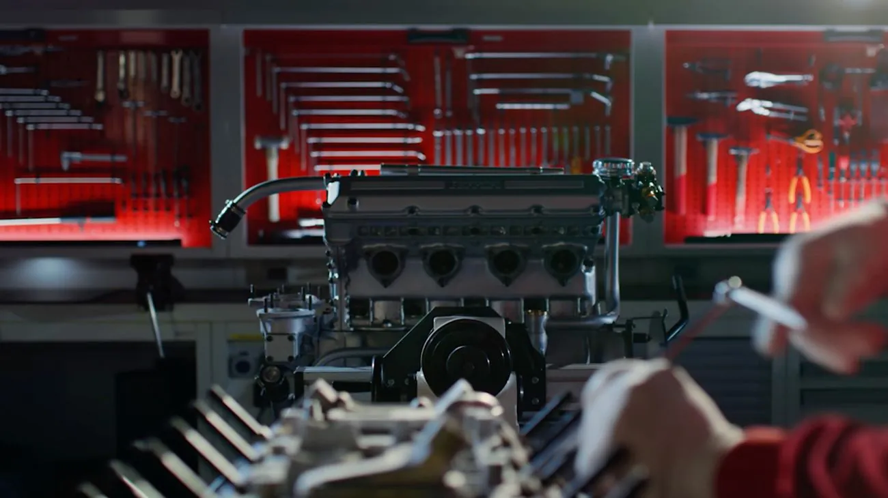
Trust the specialists
The selected Officine Classiche extend Ferrari excellence beyond Maranello, offering maintenance inspection and certification support services. These specialized centers guarantee the efficiency and authenticity of your Ferrari Classica.
Discover more about Officine Classiche on ferrari.com (opens in a new tab)4Ferrari Classiche events
Take part in Ferrari events
Ferrari Classiche events offer historic Ferrari car owners and lovers unique experiences for celebrating Prancing Horse history and performance.
-
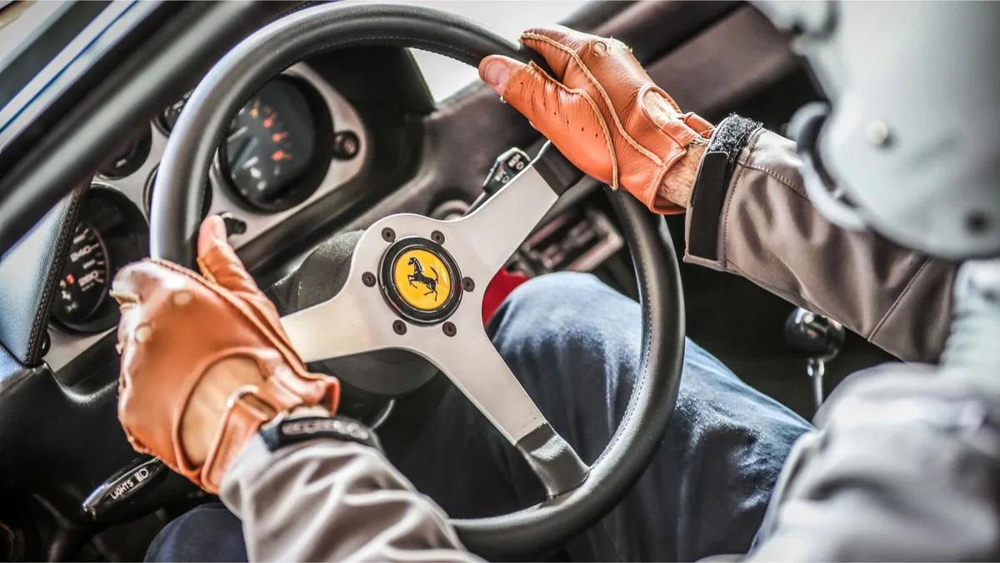
Corsi Pilota
The Fiorano circuit and the frozen lake of St Moritz play host to the Corsi Pilota driver courses, available to Ferrari Classiche owners and other Ferrari clients using cars from the company’s fleet.
Discover more about Corsi Pilota on ferrari.com (opens in a new tab) -
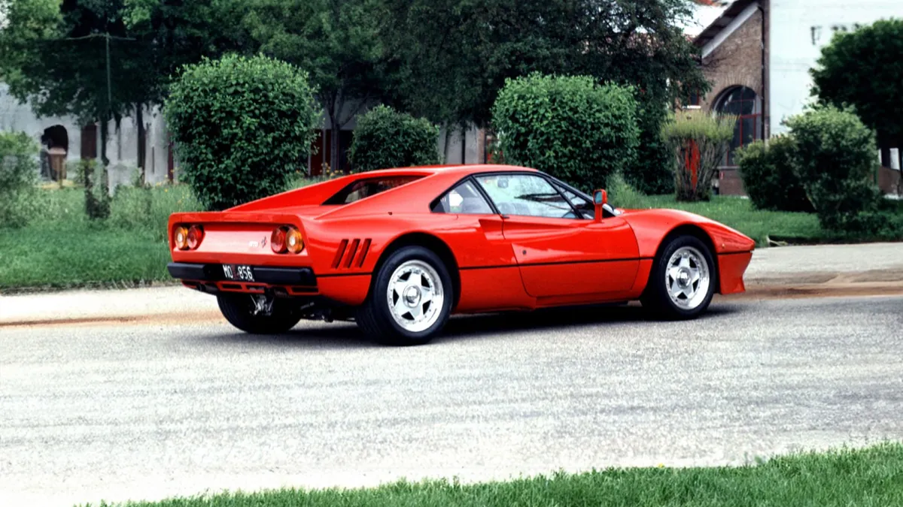
Legacy Tour
An annual experience dedicated to the owners of the most celebrated models in Ferrari history, which have Classica Certification or have already requested it.
Discover more about the Legacy Tour on ferrari.com (opens in a new tab) -
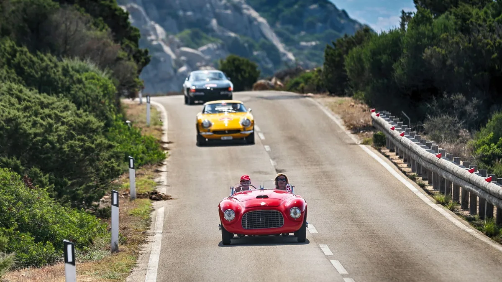
Cavalcade
The annual event that assembles a circle of certified Ferrari Classiche owners, to share a driving and life experience in a memorable destination.
Discover more about the Cavalcade on ferrari.com (opens in a new tab)
Cauley Ferrari
A timeless legend
Explore the Ferrari department that, since 2006, has preserved and handed down the history of the Prancing Horse.
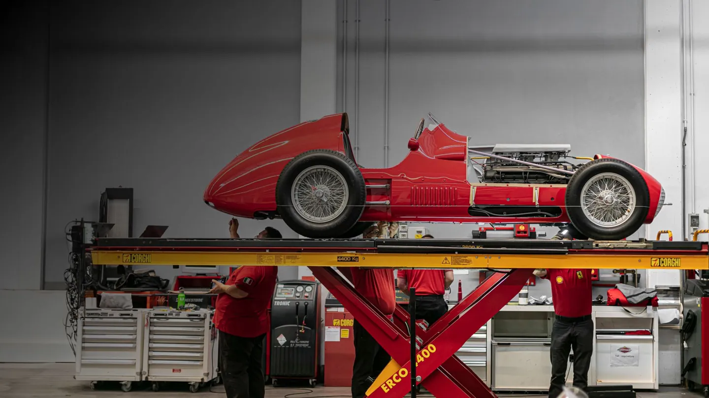